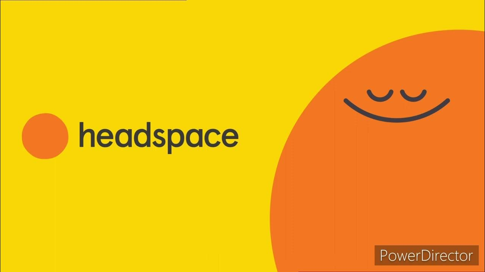
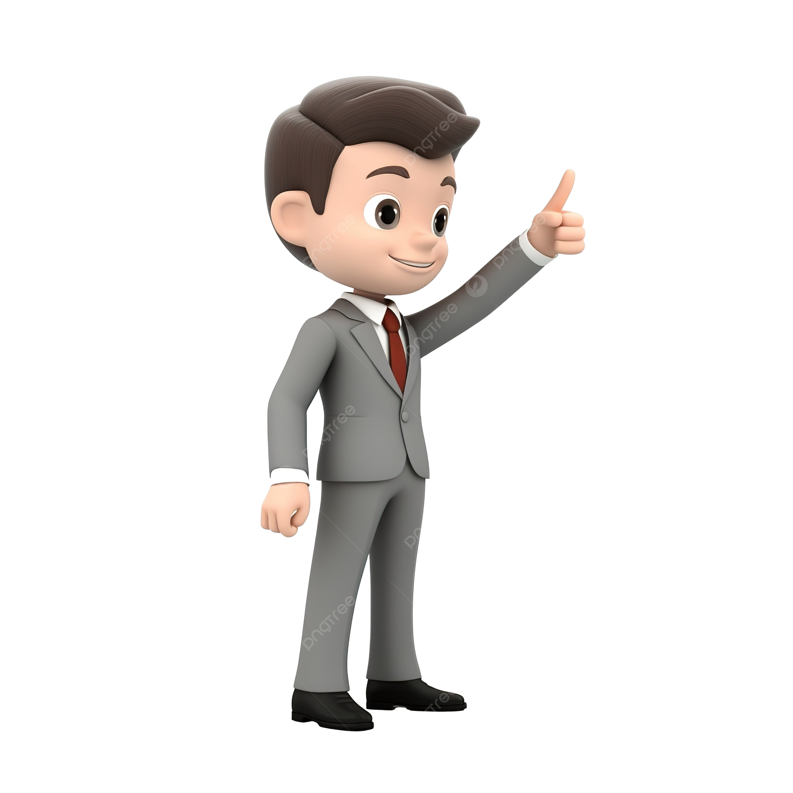

¿Cómo manejar la ansiedad universitaria Guía práctica para estudiantes de 18 a 25 años?
La salud mental en estudiantes universitarios ha tomado protagonismo en los últimos años, especialmente por el aumento de casos de ansiedad universitaria y estrés académico. La presión por rendir, adaptarse a la vida adulta y mantener una vida social activa puede ser abrumadora. Pero, ¿cómo cuidar tu mente mientras atraviesas esta etapa?
El primer paso para cuidar tu salud mental es identificar los síntomas: cansancio constante, cambios bruscos de humor, falta de motivación, insomnio o ataques de ansiedad. Estos signos pueden confundirse con “simple estrés”, pero ignorarlos puede empeorar la situación.
“Pensaba que solo estaba cansado, pero luego empecé a evitar clases y no podía concentrarme en nada.” — Camila, estudiante de psicología
El estrés por exámenes, trabajos finales y presentaciones es normal, pero vivir en estado de alertaconstante no lo es. Organizar tu tiempo, establecer prioridades y respetar tus descansos puede marcar la diferencia.
trello: para organizar tareas

headspace: meditacion guiada
forest App: enfoque sin distracciones
Hablar con alguien puede aliviar el peso. Ya sea un amigo, un tutor o un psicólogo, compartir lo que sientes es clave. Muchas universidades ofrecen servicios de apoyo psicológico gratuitos, pero pocos estudiantes los utilizan.

Un estudio del 2023 reveló que solo el 25% de los estudiantes busca ayuda profesional ante síntomas de ansiedad o depresión.
Dormir bien, comer equilibradamente y hacer ejercicio impacta directamente en tu salud mental. No es un cliché, es ciencia: el cuerpo y la mente están conectados.
En redes sociales, todo parece perfecto. Pero no ves los momentos difíciles detrás de cada historia. Compararte solo alimenta la ansiedad universitaria. Sé amable contigo mismo y celebra tus pequeños logros.